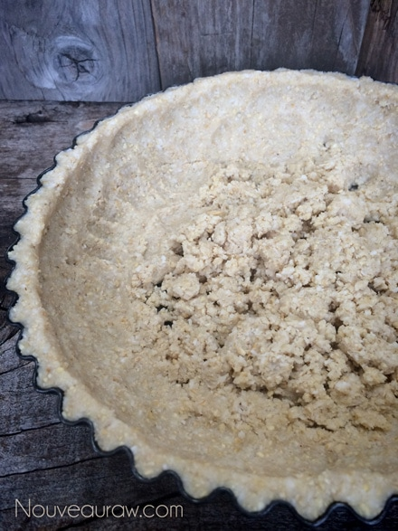
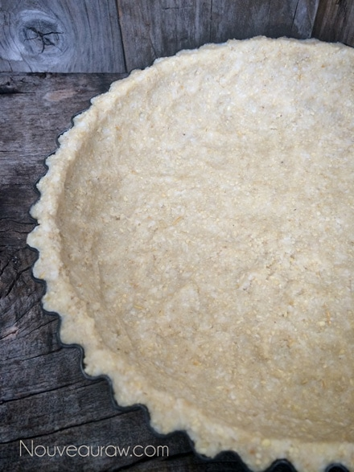
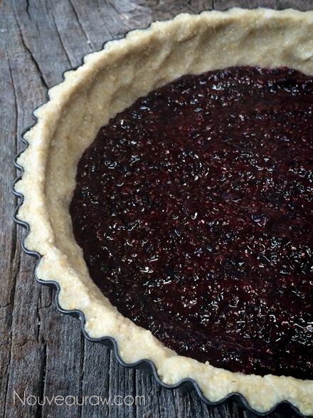
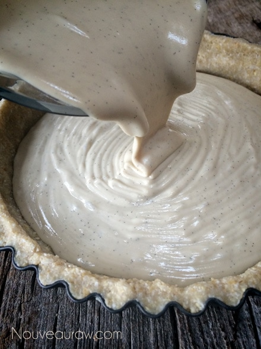
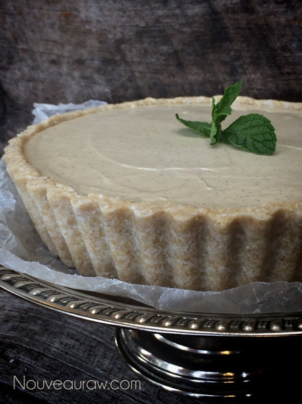
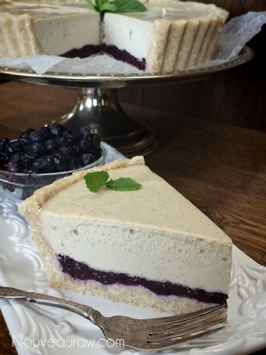
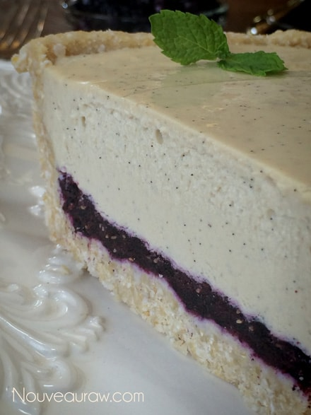

Blueberry Vanilla Bean Cheesecake

~ raw, vegan, gluten-free ~
Why is it that people use the word vanilla as an adjective to describe something or someone who is plain, boring, or lackluster? I have learned that vanilla is one of the most complex flavors around, containing over 250 different flavor compounds! So next time you refer to something or someone as being vanilla… think twice, you just might be giving them quite a high compliment.
While it is true that the majority of what we think of as the “smell” or “taste” of vanilla comes from vanillin, there are tons of other compounds that serve to round out and add nuance to the flavor. And that’s why imitation vanilla, composed almost entirely of vanillin in alcohol, is both less subtle and less complex than true vanilla derived from vanilla beans.
For this cheesecake, I used vanilla beans. While definitely on the pricier side, they are ultimate in flavor and aroma. Vanilla beans are a dark brown pod filled with thousands of little brown flavorful specks. Look for beans that are plump, smooth, and have a slight shine to them, don’t buy them if they appear dried out.
When using vanilla bean seeds, you will visibly notice thousands of little black dots fleck throughout the batter…. I for one find this just gorgeous. If you don’t want this look, use vanilla extract. For substations – 1 teaspoon of vanilla extract is equal to one 2-inch piece of vanilla bean, so 1 typical vanilla bean will equal 3 teaspoons extract.
To remove the seeds from the vanilla bean pod, split the bean lengthwise from one end to the other. Anchor the pod to the cutting board, with the “seedy flesh” part facing up, scrape out all the seeds by running a butter knife down the slit. You may need to repeat this step to ensure that you get all the seeds.
Don’t toss the empty vanilla pod… I have an on-going jar of raw agave nectar in my pantry that is filled with these empty pods. Over time, the agave becomes infused with a lovely hint of vanilla. You can also dehydrate and grind them up in a spice grinder to use in recipes.
Yields one 9” deep tart pan
Crust:
Blueberry layer:
- 2 cups organic blueberries
- 4 Medjool dates, pitted
- 2 Tbsp chia seeds
Vanilla bean filling:
- 3 cups raw cashews, soaked 2+ hours
- 1 cup almond milk
- 1/4 cup lemon juice
- 3/4 cup raw agave nectar or maple syrup
- 2 vanilla bean, seeds scraped
- 1/4 tsp Himalayan pink salt
- 3/4 cup cold-pressed coconut oil, melted
- 3 Tbsp sunflower lecithin powder or liquid
Preparation:
Crust:
- Place the cashews, oats, coconut, and salt in a food processor, fitted with an “S” blade. Process until it reaches a small crumble. About 15 seconds.
- Add the coconut butter, water, and sweetener. Process until the batter sticks together. The batter will seem a bit wet, that is all right.
- Place the batter in the crust pan and start pressing the dough into the sides of the pan, taking it all the way up to the top. Wetting your fingers will help so the batter doesn’t stick to them. Once the sides are done, firmly and evenly press the batter into the base of the pan. Set aside while you make the filling.
Blueberry layer:
- In a food processor, fitted with an “S” blade, puree the blueberries, chia seeds, and dates.
- Pour over crust and dehydrate at 145 degrees for 30-60 minutes.
- Place in the fridge to chill before adding the filling.
Vanilla bean filling:
- Drain the soaked cashews and discard the soak water. Place in a high-speed blender.
- Add almond milk, lemon juice, agave, and vanilla beans. Blend until the filling is creamy smooth. You shouldn’t detect any grit. If you do, keep blending.
- With a vortex going in the blender, add the coconut oil and lecithin. Blend long enough to incorporate.
- Pour the filling over the blueberry layer in the pan. Gently tap the pan on the counter to remove any air bubbles.
- Place the finished cheesecake in the freezer to set.
Start by pressing the crust batter along the edges of the pan.

Once the edges are done, press the center of the crust down, firmly & even

Pour in the blueberry layer and dehydrate for 1 hour at 145 degrees (F).

Once cooled, pour the vanilla bean filling into the pie pan.

Tap the cheesecake on the counter to bring up any bubbles within the batt

Freeze overnight and then move to the fridge.

I thought you might like to see this cheesecake up-close-and-personal.
Check out those vanilla bean seeds!

© AmieSue.com